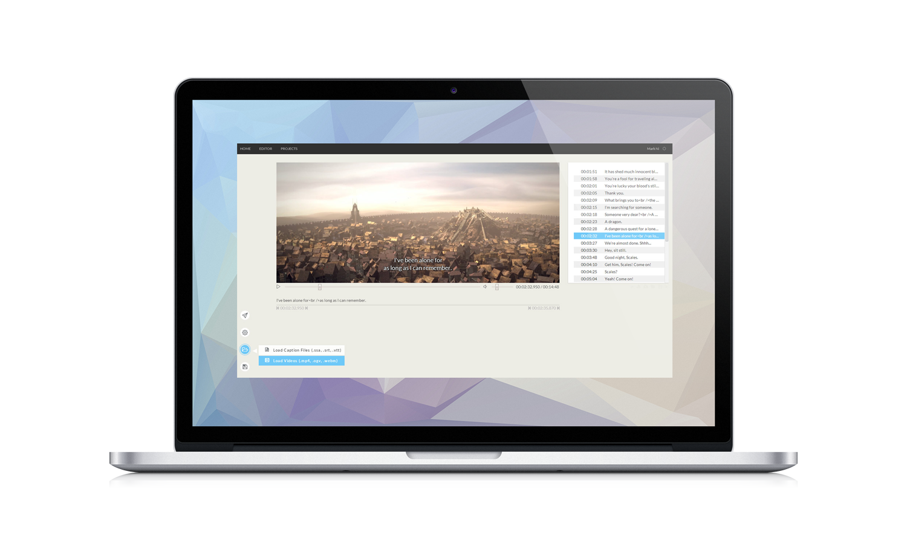
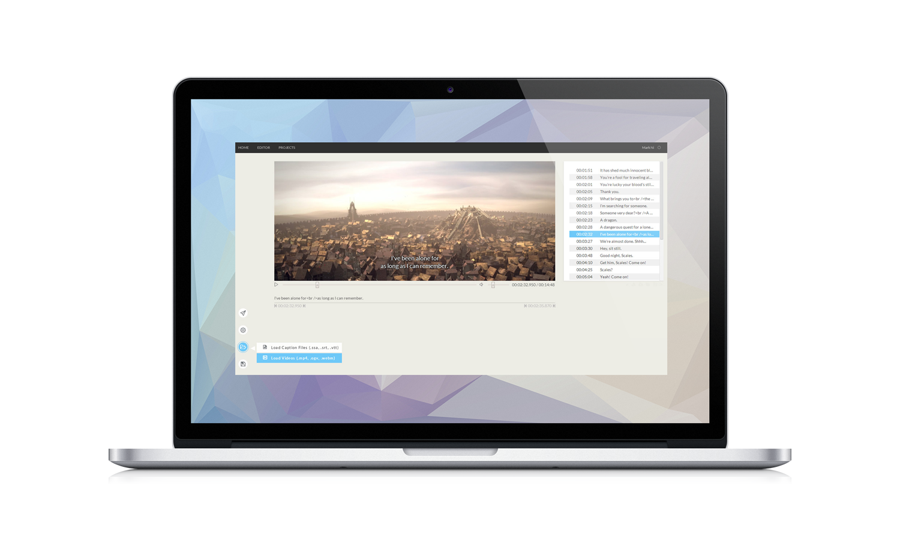

Hello there, my name is Mark.
I'm a web developer. I love creating exciting web apps with JavaScript. Last year, I worked for IBM on their latest web project.
{ Recent Projects }
Nagi
Nagi is a web based All-in-one solution for video subtitle and caption making. It follows the latest html5 video caption standards (webVTT) and compatible with other popular subtitle formats(.srt, .ssa and more). Thanks to html5 file api, It's also one of the first web subtitle editors that works with user's offline local video.
Nagi is build upon modern MEAN stack ( MongoDB ExpressJS, AngularJS, NodeJS). With the help of Youtube player and data API, it also enables users to edit subtitles for youtube videos on the fly. As an open platform that means to share, all contents on the sites can be easily forked with a simple click.
 

Engage
The Engage is a web app that enables user to share any url from the web with an extra trick: it will analyze the page and extract only the main content, then reformat it into reader friendly format that fits to all devices.
Engage is a hornor research project for Simon Fraser University, it’s a group based project resulted in the collaboration of students from SFU’s CS and design departments. The app is written in NodeJS, JQuery and ZURB Foundation with both MYSQL and Elasticsearch used in the DB end (Elasticsearch enables us fast full text indexing/search for shared articles).
My responsibility in the team is front-end design implementation (both Javascript and CSS) and server side REST services design and implementation.
Intouch
InTouch is a mobile web app I designed to help users manage their TV show watching progress. Being a Tv drama / Animation fan, it’s easy to lost track what episodes you last time watched to. With this app, users can keep track their progress of all shows they currently watching and get notified when a new episode will be on air.
As more people watching their favorite shows on their mobile devices, InTouch is designed with mobile in mind. The app is build with AngularJS, NodeJS and Bootstrap with REST api for data communication in between and html5 localstorage for client side caching. This ensures a fast and responsive user experience on every devices.
Clash
Clash is a simple yet addictive html5 strategy/puzzle game, designed to enjoyed on both PC and tablet web browser. It was handcrafted with AngularJS without any game engine.
View More Projects on Github
{ Work & Education }
-
IBM Canada
Victoria, B.C.
2013.1 - 2013.4
Front-end web application development for IBM Forms.
-
PNI digital media
Vancouver, B.C.
2011.1 - 2011.8
Web products development and UI implementation for industry leading retailers such as Wal-Mart and Costco.
-
B.Sc, Computing Scince
Simon Fraser University, Canada
2008 - 2013
{ Design }
Besides programing, I have a great interest in design as well! That’s means that I quite skillful in design tools such as Adobe Photoshop and Illustrator. Many of my applications that result of my own design (such as this page). I’m also a fan of photography. So if you’re share the same interests, be sure to check out my Dribbble and Flickr page!
Otherwise, feel free to contact me by the following social medias or by email.